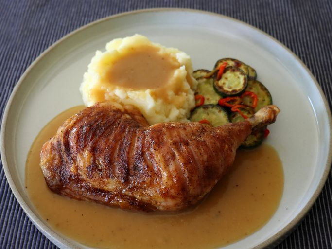

Tiger Chicken Recipe

Description
Tiger Chicken is a bold and flavorful dish known for its spicy kick and vibrant orange color.
Inspired by Asian fusion cuisine, this recipe combines crispy chicken pieces with a
sweet and spicy glaze that "roars" with flavor.
Perfect for those who love a bit of heat, this dish is usually served over a bed of
steamed rice or with fresh vegetables to balance the intensity of the sauce.
Its quick to make and guaranteed to impress anyone looking for something beyond the ordinary.
Ingredients
- 1.5 lbs chicken breast, cut into bite-sized pieces
- 1/2 cup cornstarch (for coating)
- 2 tablespoons vegetable oil
- 1/4 cup Sriracha or chili garlic sauce
- 3 tablespoons honey or brown sugar
- 1 tablespoon soy sauce
- 1 teaspoon fresh ginger, minced
- Sesame seeds and green onions for garnish
Steps
- In a large bowl, toss the chicken pieces with cornstarch until evenly coated.
- Heat the vegetable oil in a large skillet or wok over medium-high heat.
- Add the chicken to the skillet and cook until golden brown and crispy on all sides. Remove chicken and set aside.
- In the same skillet, whisk together the chili sauce, honey, soy sauce, and ginger.
- Simmer the sauce for 2-3 minutes until it starts to thicken into a sticky glaze.
- Add the crispy chicken back into the skillet and toss until every piece is perfectly coated.
- Serve immediately over rice, garnished with sesame seeds and chopped green onions.
Home